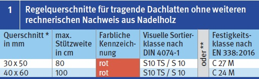

Dacharbeiten
Dachlatten als Arbeitsplatz
|
|
Gefährdungen
- Bei falscher Dimensionierung und/oder unzureichender Qualität von Dachlatten können diese beim Begehen brechen und es kann zum Absturzunfall kommen.
Allgemeines
- Werden gelattete Dachflächen als Arbeitsplätze verwendet, müssen die Dachlatten den Qualitäts- bzw. Festigkeitskriterien entsprechen (s. Tab. 1).
- Für Arbeiten auf Flächen mit mehr als 45° Neigung besondere Arbeitsplätze mit mind. 0,50 m breiten, waagerechten Standflächen zu schaffen.
- Besondere Arbeitsplätze können hierbei auch gelattete Dachflächen sein.
- Gelattete Dachflächen für Dachziegel oder Dachsteine gelten als geschlossene Flächen, wenn alle folgenden Kriterien eingehalten werden:
- die Regelquerschnitte, die max. Stützweite und die Holzqualität entsprechen Tab. 1,
- der lichte Abstand der Dachlatten beträgt nicht mehr als 0,40 m,
- die Dachneigung ist größer als 22,5° und
- Bei einem lichten Abstand der Dachlatten über 0,40 m muss zu sätzlich eine fachgerecht eingebaute Unterspannbahn mit einer Zugfestigkeit von ≥ 450 N/50 mm eingebaut werden.
Schutzmaßnahmen
Bestellung
- Bei der Bestellung von Dachlatten die genaue Bezeichnung beachten, z. B.: Dachlatte, DIN 4074-1, S10 – Fi/Ta, 40 x 60 oder Dachlatte, DIN EN 338, Festigkeitsklasse C 24M Fi/Ta, 40 x 60.
Kennzeichnung
- Dachlatten entsprechend der Qualitäts- bzw. Festigkeitskriterien sind an den Stirnseiten rot eingefärbt.
Einbau der Dachlatten
- Dachlatten können ohne rechnerischen Nachweis in Abhängigkeit von der Stützweite nach Tab. 1 eingebaut werden, ansonsten müssen Dachlatten für den Querschnitt und das Verbindungsmittel rechnerisch nachgewiesen werden.
- Die Befestigung der Dachlatten ist nach der DIN EN 1995-1-1 und den handwerklichen Regeln auszuführen.
- Bei der Befestigung der Dachlatten sind die Mindestnagelabstände und -eindringtiefen sowie die erforderlichen Randabstände einzuhalten.
- Die Mindestauflagerbreite für die Dachlatten am Dachlattenstoß ergibt sich aus dem Durchmesser des Verbindungsmittels und dem erforderlichen Randabstand.
- Ist die Mindestauflagenbreite des Sparrens nicht ausreichend, kann diese z.B. durch ein breites Konterbrett bzw. -bohle oder durch zwei parallel angeordnete Konterlatten, die auf den Sparren aufgebracht sind, erreicht werden.
- Dachlatten, die beim Einbau beschädigt wurden, z.B. aufreißen der Stirnseiten, ausbauen.

* Abweichungen von den Nennquerschnitten dürfen nach DIN EN 336:2013-12 höchstens -1 /+3 mm betragen (bezogen auf u = 20 % Holzfeuchte)
** Die Sortierklassen dürfen nicht den Festigkeitsklassen zugeordnet werden – jede ist auf Grund der unterschiedlichen Bewertungskriterien gesondert zu betrachten!
Prüfungen
- Dachlatten auf vorhandene
Farbkennzeichnung überprüfen.
- Bei visuell sortierten Dachlatten vor dem Einbau Dachlatten mit groben Holzfehlern (Äste, Holzrisse, Baumkanten) aussortieren oder Holzfehler ausschneiden.
- Mitarbeiter bezüglich der Qualitätsprüfung auf der Baustelle entsprechend schulen und unterweisen.
07/2021